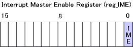
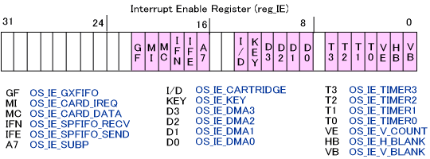
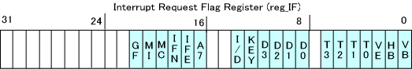
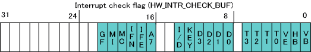
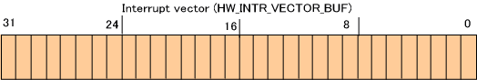
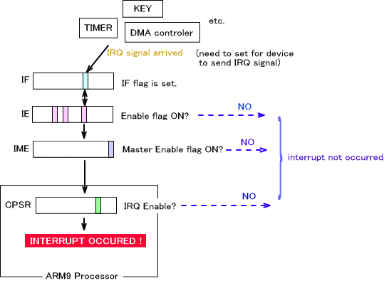
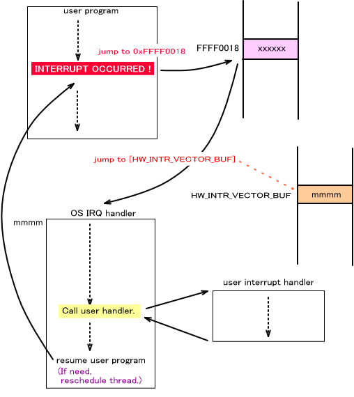
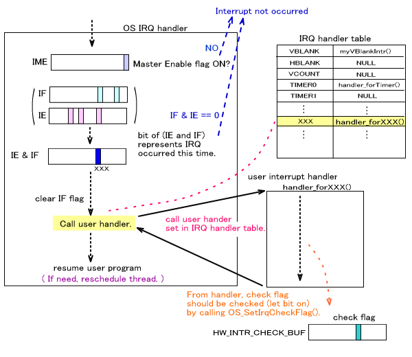

Interrupts provide a mechanism for temporarily interrupting one executing program so a more urgent program can execute, and then resume execution of the first program.
If some special process needs to be conducted because of the state of the system or hardware, the only way to implement that process—if interrupts are not employed—is to check the status periodically (polling) to look for an opportunity. But if interrupts are used, a program that has been prepared for a set of conditions can be executed immediately when those conditions arise. The interrupt mechanism provides more immediacy than polling, and it lets the main program devote itself to its own processes.
This page explains the functions that handle interrupts.
Interrupt Causes
A variety of events can cause interrupts, and the causes differ for the ARM9 and the ARM7. Below is a list of of interrupt names and their causes on the ARM9.
| OS_IE_V_BLANK | V-blank interrupt |
| OS_IE_H_BLANK | H-blank interrupt |
| OS_IE_V_COUNT | V counter interrupt |
| OS_IE_TIMER0 | Timer0 interrupt |
| OS_IE_TIMER1 | Timer1 interrupt |
| OS_IE_TIMER2 | Timer2 interrupt |
| OS_IE_TIMER3 | Timer3 interrupt |
| OS_IE_DMA0 | DMA0 interrupt |
| OS_IE_DMA1 | DMA1 interrupt |
| OS_IE_DMA2 | DMA2 interrupt |
| OS_IE_DMA3 | DMA3 interrupt |
| OS_IE_KEY | Key interrupt *1 |
| OS_IE_CARTRIDGE | Game Pak IREQ/DREQ interrupt |
| OS_IE_SUBP | ARM7 interrupt |
| OS_IE_SPFIFO_SEND | ARM9-ARM7 send FIFO empty interrupt |
| OS_IE_SPFIFO_RECV | ARM9-ARM7 receive FIFO not-empty interrupt |
| OS_IE_CARD_DATA | Card data transfer end interrupt |
| OS_IE_CARD_IREQ | Card IREQ interrupt |
| OS_IE_GXFIFO | Geometry command FIFO interrupt |
*1 The hardware specification does not allow the use of the key interrupt. However, it can be used for awakening from sleep.
Registers and Work Regions Associated With Interrupts
The reg_IME (0x04000208) register functions as the master enable/disable flag—setting all interrupts. When the bit is 1, all interrupts are enabled. When the bit is 0, all interrupts are disabled. The functions that operate this flag are OS_EnableIrq(), OS_DisableIrq(), and OS_RestoreIrq().

Interrupt generation can be specified for each interrupt cause by using the I/O register, reg_IE (0x04000210). When the bit for a cause is set to 1, it is permitted to generate an interrupt. The functions that set and obtain this bit are OS_SetIrqMask(), OS_GetIrqMask(), OS_EnableIrqMask(), and OS_DisableIrqMask(). (Note that there are differences between Set functions and Enable functions.)

Each bit in the Interrupt Request register reg_IF (0x03000214) takes the value 1 when the corresponding interrupt gets generated. The relation between interrupts and bits is the same as that for the reg_IE register. The functions that set and obtain this flag are OS_ResetRequestIrqMask() and OS_GetRequestIrqMask().

The ARM9 processor's Current Program Status Register (CPSR) has a bit that defines whether IRQs are enabled.
( (See System (overview)for details.) IRQs are disabled when the I flag of this register is 1 and are enabled when the bit is 0. Not in this "interrupt" category but in the "system status" category, the functions that change this status are OS_EnableInterrupts(), OS_DisableInterrupts(), and OS_RestoreInterrupts()
Check-flag regions are set up so the interrupt handlers can check things out when interrupts are generated. These regions are located in DTCM. The relation between interrupt causes and bits is the same as that for the reg_IE register. The functions that set and obtain the check flag are OS_SetIrqCheckFlag(), OS_ClearIrqCheckFlag(), and OS_GetIrqCheckFlag().

Interrupts are a kind of processor exception. When an interrupt occurs, the system jumps to the address stored in the interrupt vector HW_INTR_VECTOR_BUF on DTCM. Normally the address of IRQ handler for OS is stored, but this will be rewritten if a user uses an unique interrupt routine.

Process Flow Up to Interrupt Generation
The interrupt notification from a device or elsewhere reaches the processor through the flow depicted below:

If the interrupt is set to be generated for a specified device, the corresponding IF bit becomes 1 when the interrupt conditions for that device are met.
An interrupt will not be generated if the interrupt cause for the IF bit that became 1 is not permitted with IE. Also, the interrupt is not sent to the CPU if IME is disabled. If the conditions up to this point are met, the interrupt notification reaches AMR9 processor. If the IRQ flag of CPRS is set to 0 (enabled), the IRQ interrupt will be generated immediately. If set to 1 (disabled), IRQ interrupt will be delayed.
IRQ interrupts are a kind of ARM processor exception (called an IRQ exception). For details, see Exceptions (overview).
When an IRQ interrupt is generated, the ARM9 processor interrupts the program and jumps to 0xFFFF0018. Take a look at the flow shown below.

After the process jumps to 0xFFFF0018, control is transferred to the address stored in HW_INTR_VECTOR_BUF in some region of DTCM. Normally, this is the address for the OS IRQ handler. Overwrite HW_INTR_VECTOR_BUF if you want to create your own IRQ handler. The user's preregistered interrupt handler is called from inside the IRQ handler. After returning from the IRQ handler, the program starts again from the the address which follows the address where the interrupt occurred. (Actually, you can also switch threads. See Threads (overview).)
Following is a more detailed description of the processes inside the OS IRQ handler.

At the beginning of inside the handler, the process first checks whether the IME is enabled and returns without doing anything if the IME is not enabled. The next step is to perform a logical AND on the IE and IF bits. If the result is 0, the process returns without doing anything. If the result is not 0, the process continues by processing the interrupt corresponding to the bit that is 1. The IME, IE, and IF bits are checked because it is possible for an interrupt signal to make it to the processor while some process is accessing the I/O register and making changes to prohibited interrupts and the causes of interrupts. These checks thus ensure that things correctly comply with the settings in the I/O register.
The workflow after that is described here. As a result of the logical product of IE and IF that was calculated before, the interrupt handler that corresponds to the bit that is set to 1 is called. This handler is registered in the IRQ table in advance by the user. IRQ handler references this table, and obtains the user's interrupt handler address.
After the process comes back from the user's interrupt handler it returns to the user program. However, if a thread-switch event occurs inside the interrupt handler, thread rescheduling occurs( (see Threads (overview)).
Set a check flag for the interrupt inside the user's interrupt handler. This check flag is used by other OS functions. If these functions will not be using the check flag, it does not need to be set. However, we recommend that you set it anyway so it is there just in case later changes require its presence.( (See OS_SetIrqCheckFlag()
Enabling/Disabling Interrupts
These functions can be used to control the master enable flag for all interrupts:
OS_EnableIrq(), OS_DisableIrq(), OS_RestoreIrq()
Enabling/Disabling System State Interrupts
For details, see System (overview). These functions are "system" category functions, not "interrupt" category functions. They can be used to change the CPSR status.
OS_EnableInterrupts(), OS_DisableInterrupts(), OS_RestoreInterrupts()
Configuring Interrupt Causes
The following functions can be used to set and obtain the causes of interrupts:
OS_SetIrqMask(), OS_GetIrqMask(), OS_EnableIrqMask(), OS_DisableIrqMask()
Controlling Interrupt Request Flags
The following functions can be used to control interrupt request flags:
OS_ResetRequestIrqMask(), OS_GetRequestIrqMask()
Configuring Interrupt Handlers
The following functions can be used to set and obtain interrupt handlers:
OS_InitIrqTable(), OS_SetIrqFunction(), OS_GetIrqFunction()
Controlling the Interrupt Check Flag
The following functions can be used to control the interrupt check flag:
OS_SetIrqCheckFlag(), OS_ClearIrqCheckFlag(), OS_GetIrqCheckFlag()
Waiting for Interrupts
The following functions are designed to pause the process until an interrupt to occurs:
OS_WaitIrq(), OS_WaitAnyIrq(), OS_WaitInterrupt()
The arguments in OS_WaitIrq() and OS_WaitInterrupt() specify which interrupt to wait for. In contrast, OS_WaitAnyIrq() is designed to wait for any interrupt to occur.
OS_WaitIrq() and OS_WaitInterrupt() differ in the way they operate while waiting for an interrupt. OS_WaitIrq() switches the context and transfers the process to another thread, while OS_WaitInterrupt() stops when OS_Halt() is called, so no thread switching occurs. If you are not using the thread system, both functions behave the same way.
The SVC_WaitVBlankIntr() function is available to wait for a V-blank in a system call. This function does not switch threads.
Inside these interrupt wait functions, OS_Halt() temporarily stops the current process and transfers control to other threads. However, when interrupts are generated and enter a state of execution, the interrupt check flag is referenced to determine whether or not the interrupt that was generated was the specified interrupt. For this reason, the interrupt check flag must be set in the interrupt handler.
The V-Blank Counter
The following function is available to get the V-blank counter value used for V-blank interrupts:
V-blank interrupts are always enabled in the ARM7, so this function internally writes the number of interrupts in the shared region of main memory. The ARM9 command reflects the value written in the shared region.
List of OS Functions (Interrupts)
03/08/2005 Unified Japanese term for "interrupt."
12/14/2004 Corrected terms and word endings.
12/08/2004 Added warning about OS_IE_KEY.
11/17 /2004 Initial version.
CONFIDENTIAL